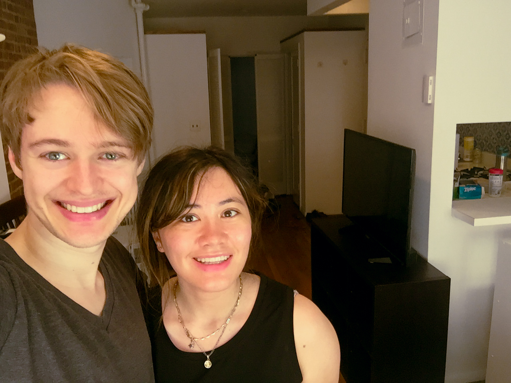

Year Ten
︵‿︵‿୨♡୧‿︵‿︵
2020 to 2021
Time lost all meaning during the second year of COVID-19. Marcie started animating for a Netflix show whose nerdiest viewers cyberbullied her because of a small mistake in her depiction of a chess match that appeared on screen for less than one second. After weeping hysterically for days, she vowed that she would only play checkers for the rest of her life. Meanwhile, I continued to write my dissertation. Marcie and I both worked from home in our small, dark studio apartment, which made us feel like we were living in a submarine. During the summer, we took a short trip to the Catskills with our friends. There, we decided that we needed a bigger apartment, so we moved into a new building a few blocks south of our old one.
ML: Please please read the absolutely unhinged Reddit comments and avenge me.
︵‿︵‿୨♡୧‿︵‿︵
Upstate New York

Marcie shows off the amount of toilet paper that she uses in the average week.
︵‿︵‿୨♡୧‿︵‿︵
COVID Quarantine in NYC, Continued

A very special birthday card for a very special birthday boy—a special surprise from Marcie.

Marcie’s most cherished possession: a 3D-printed image of Shrek as the Buddha.

My most cherished possession: the chunk of ice that I painstakingly scraped from the back of our shoebox-sized freezer, which did not defrost on its own.

A New York City resident, left, poses with a sculpture of a woman in Central Park.

This is the happiest that I have ever seen Marcie. At the wedding, be sure to ask what she’s looking at.

I say a fond goodbye to my beloved office chair, which I surrender to the rats before we move (RIP: 2016–21).
Sweaty and disheveled, we regret our choice to move in 100-degree weather.